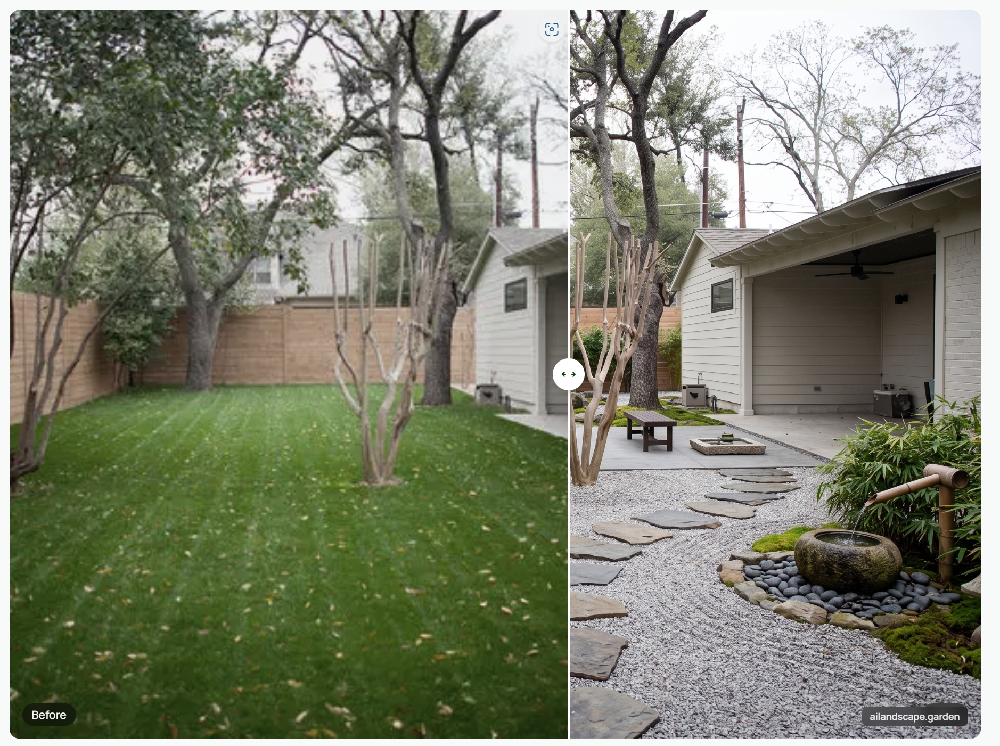

.

LandscapingAI är en AI-baserad tjänst som hjälper användare att skapa och visualisera trädgårds- och landskapsdesigner direkt online. Plattformen använder artificiell intelligens för att generera designförslag baserat på bilder och olika typer av utomhusmiljöer.
LandscapingAI är utvecklad av företaget bakom tjänsten LandscapioAI. Plattformen skapades för att göra professionell landskapsdesign enklare och mer tillgänglig för både privatpersoner och företag.
Hemsidan används för att:
| Abonnemang | Pris | Funktioner |
|---|---|---|
| Gratisplan | Gratis | Begränsat antal designer och standardkvalitet |
| Weekly Pass | Ca 4.99 USD/vecka | Obegränsade designer och revisioner |
| Pro Annual | Ca 79 USD/år | HD-bilder, snabb rendering och premiumfunktioner |
| Visionary Founder’s Pass | Ca 149 USD engångsbetalning | Livstidsåtkomst och VIP-funktioner |
LandscapingAI är en modern AI-plattform som gör det möjligt att skapa och visualisera trädgårds- och landskapsdesigner snabbt och enkelt. Plattformen passar både privatpersoner och företag som vill planera utomhusprojekt digitalt.
Samtidigt är det viktigt att förstå att AI-genererade designer inte alltid är helt exakta och att större projekt fortfarande kan kräva professionell rådgivning.